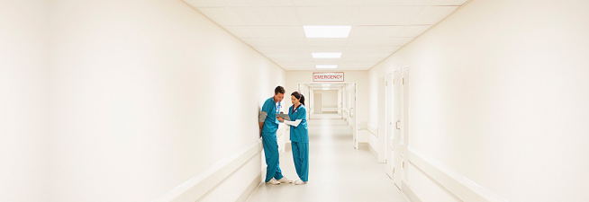

同和医院特色中医康复中心
珠海同和医院特色中医康复中心是兼顾公益事业的康复护理医疗单位，是为相关患者提供康复医疗、教育、职业、社会等康复服务的综合性康复机构和技术资源中心，承担着康复训练与服务、康复技术人才培养、社区康复服务指导、康复信息咨询服务、康复知识宣传普及、康复研究和预防等工作。
同和医院特色中医康复中心设有各科康复门诊、化验室、放射科、心电图室、脑电图室、理疗室、药房、针灸室、按摩室等，同和医院医疗服务相辅相成。

特色医疗服务：
聘请经验丰富的老中医，施行推拿，针灸，按摩等传统治疗手段，在充分继承和发扬传统康复治疗技术的同时，不断引进新的现代康复治疗方法，形成了一套以传统康复治疗为主，辅以现代康复治疗的综合治疗方法对以下病症有重大治疗突破。
骨伤科：颈椎病、肩周炎、类风湿、腰椎综合征、强直性脊柱炎、股骨头坏死
内科：感冒、哮喘、脾胃病、胃溃疡、胃下垂（肾下垂）、高血压、冠心病等
妇科：痛经、不孕不育、癥瘕（囊肿）等
儿科：小儿惊风、小儿夜啼等
其他：牙痛、美容祛斑、减肥等
康复医疗服务：
1．康复训练：肌力、耐力、关节活动度、平衡、步行等训练和牵引疗法。
2．电疗、透热治疗、光疗技术。
3．针灸、按摩等传统疗法。
4．社区指导：指导社区患者康复训练，宣传普及康复知识；对基层康复服务机构进行技术指导。
5．康复工程：家庭康复的环境改造指导，简易运动治疗和作业治疗器具、矫形器、助行器、自助具的制作和训练指导。